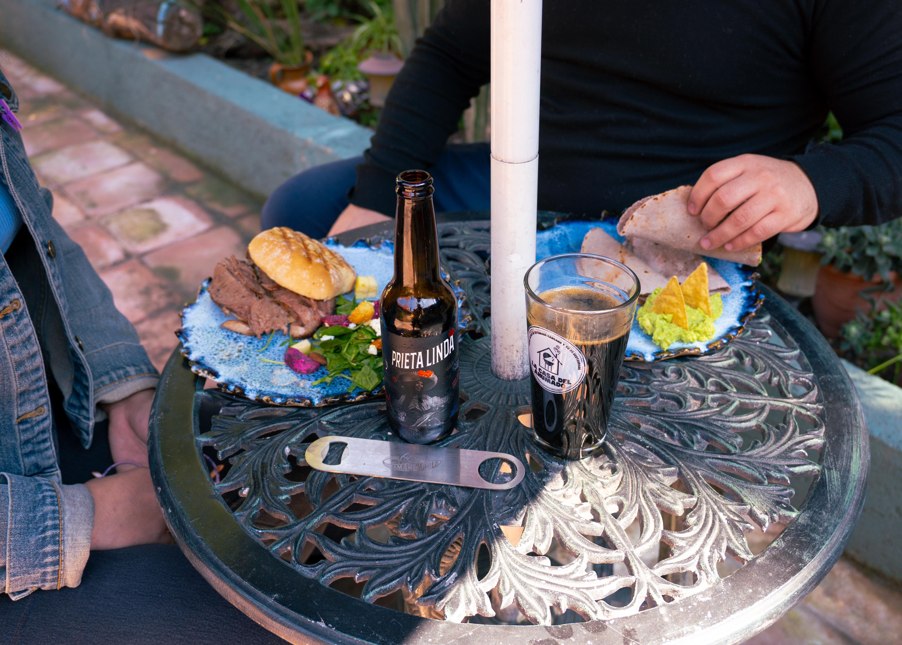
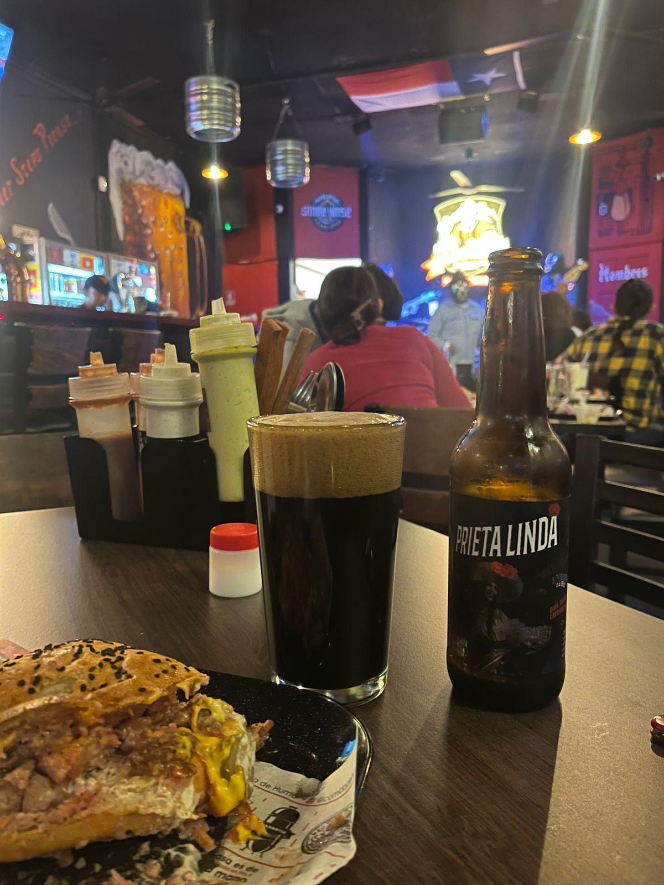
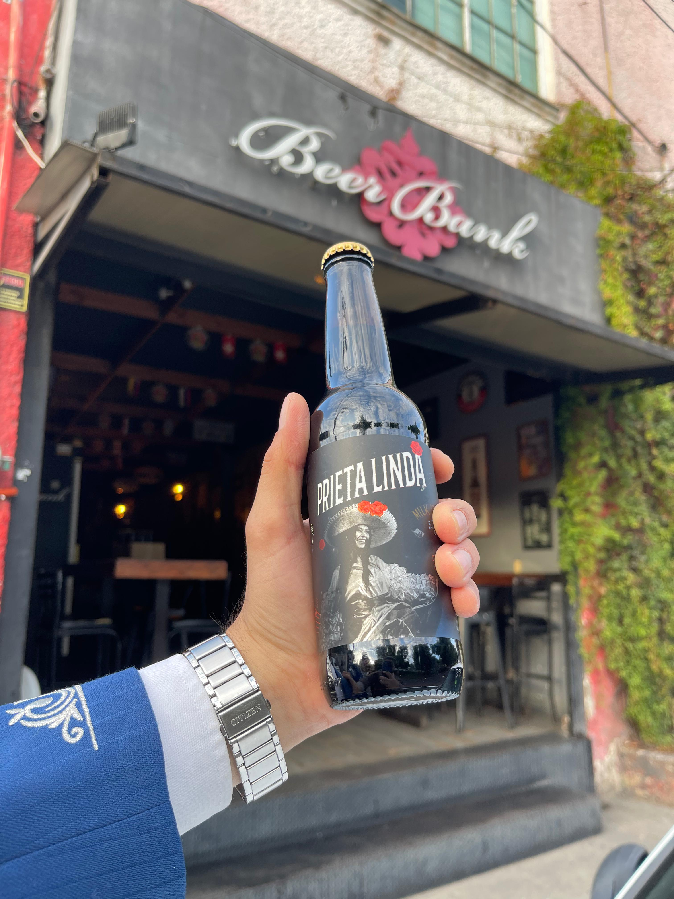

<!DOCTYPE html>
<html>
<head>
    
    <meta http-equiv="content-type" content="text/html; charset=UTF-8" />
    
        <script>
            L_NO_TOUCH = false;
            L_DISABLE_3D = false;
        </script>
    
    <style>html, body {width: 100%;height: 100%;margin: 0;padding: 0;}</style>
    <style>#map {position:absolute;top:0;bottom:0;right:0;left:0;}</style>
    <script src="https://cdn.jsdelivr.net/npm/leaflet@1.9.3/dist/leaflet.js"></script>
    <script src="https://code.jquery.com/jquery-3.7.1.min.js"></script>
    <script src="https://cdn.jsdelivr.net/npm/bootstrap@5.2.2/dist/js/bootstrap.bundle.min.js"></script>
    <script src="https://cdnjs.cloudflare.com/ajax/libs/Leaflet.awesome-markers/2.0.2/leaflet.awesome-markers.js"></script>
    <link rel="stylesheet" href="https://cdn.jsdelivr.net/npm/leaflet@1.9.3/dist/leaflet.css"/>
    <link rel="stylesheet" href="https://cdn.jsdelivr.net/npm/bootstrap@5.2.2/dist/css/bootstrap.min.css"/>
    <link rel="stylesheet" href="https://netdna.bootstrapcdn.com/bootstrap/3.0.0/css/bootstrap-glyphicons.css"/>
    <link rel="stylesheet" href="https://cdn.jsdelivr.net/npm/@fortawesome/fontawesome-free@6.2.0/css/all.min.css"/>
    <link rel="stylesheet" href="https://cdnjs.cloudflare.com/ajax/libs/Leaflet.awesome-markers/2.0.2/leaflet.awesome-markers.css"/>
    <link rel="stylesheet" href="https://cdn.jsdelivr.net/gh/python-visualization/folium/folium/templates/leaflet.awesome.rotate.min.css"/>
    
            <meta name="viewport" content="width=device-width,
                initial-scale=1.0, maximum-scale=1.0, user-scalable=no" />
            <style>
                #map_5e366ba62f547fa41ed349f4cbdb1e33 {
                    position: relative;
                    width: 100.0%;
                    height: 100.0%;
                    left: 0.0%;
                    top: 0.0%;
                }
                .leaflet-container { font-size: 1rem; }
            </style>
        
</head>
<body>
    
    
            <div class="folium-map" id="map_5e366ba62f547fa41ed349f4cbdb1e33" ></div>
        
</body>
<script>
    
    
            var map_5e366ba62f547fa41ed349f4cbdb1e33 = L.map(
                "map_5e366ba62f547fa41ed349f4cbdb1e33",
                {
                    center: [19.691850633333335, -101.18260049999999],
                    crs: L.CRS.EPSG3857,
                    ...{
  "zoom": 14,
  "zoomControl": true,
  "preferCanvas": false,
}

                }
            );

            

        
    
            var tile_layer_704a940932efa608c8250aaddfa13a41 = L.tileLayer(
                "https://{s}.basemaps.cartocdn.com/light_all/{z}/{x}/{y}{r}.png",
                {
  "minZoom": 0,
  "maxZoom": 20,
  "maxNativeZoom": 20,
  "noWrap": false,
  "attribution": "\u0026copy; \u003ca href=\"https://www.openstreetmap.org/copyright\"\u003eOpenStreetMap\u003c/a\u003e contributors \u0026copy; \u003ca href=\"https://carto.com/attributions\"\u003eCARTO\u003c/a\u003e",
  "subdomains": "abcd",
  "detectRetina": false,
  "tms": false,
  "opacity": 1,
}

            );
        
    
            tile_layer_704a940932efa608c8250aaddfa13a41.addTo(map_5e366ba62f547fa41ed349f4cbdb1e33);
        
    
            var marker_2503c408fa729470a0bf0f111dc8eca5 = L.marker(
                [19.6825907, -101.200604],
                {
}
            ).addTo(map_5e366ba62f547fa41ed349f4cbdb1e33);
        
    
            var icon_dadc0ab927896f55ceedce8a2cf333b1 = L.AwesomeMarkers.icon(
                {
  "markerColor": "green",
  "iconColor": "white",
  "icon": "info-circle",
  "prefix": "glyphicon",
  "extraClasses": "fa-rotate-0",
}
            );
            marker_2503c408fa729470a0bf0f111dc8eca5.setIcon(icon_dadc0ab927896f55ceedce8a2cf333b1);
        
    
        var popup_df9215443c035d26c36f89c0eda46733 = L.popup({
  "maxWidth": 300,
});

        
            
                var html_709321dc49a85b72a945dfea057edb3b = $(`<div id="html_709321dc49a85b72a945dfea057edb3b" style="width: 100.0%; height: 100.0%;">     <br>     <b style="text-align: center; display: block;">𝗟𝗮 𝗖𝗮𝘀𝗮 𝗱𝗲𝗹 𝗔𝗵𝘂𝗺𝗮𝗱𝗼</b><br>     <i>Domingos sabrosos: ahumados irresistibles, patio acogedor y Marichila armoniosa.</i><br>     <i>Rusia 201, Villa Universidad, 58060 Morelia, Mich., Mexico</i><br>     <a href="https://maps.app.goo.gl/8ZVXtrgBXW9XiDY38" target="_blank">Google Maps</a><br><b>Redes Sociales:</b><br><a href="https://www.instagram.com/la.casa.del.ahumado?utm_source=ig_web_button_share_sheet&igsh=ZDNlZDc0MzIxNw==" target="_blank">IG</a> | <a href="https://www.facebook.com/LaCasaDelAhumado" target="_blank">FB</a><br>     <hr>     <div style="text-align: center; margin-top: 10px;">         <p style="font-size: 16px; margin: 5px;">Te invitamos</p>              </div>     </div>`)[0];
                popup_df9215443c035d26c36f89c0eda46733.setContent(html_709321dc49a85b72a945dfea057edb3b);
            
        

        marker_2503c408fa729470a0bf0f111dc8eca5.bindPopup(popup_df9215443c035d26c36f89c0eda46733)
        ;

        
    
    
            var marker_f32853d664d901aceebef06253216b8b = L.marker(
                [19.7037562, -101.1807705],
                {
}
            ).addTo(map_5e366ba62f547fa41ed349f4cbdb1e33);
        
    
            var icon_cdbccc08a7934c215e74b6aed755072b = L.AwesomeMarkers.icon(
                {
  "markerColor": "green",
  "iconColor": "white",
  "icon": "info-circle",
  "prefix": "glyphicon",
  "extraClasses": "fa-rotate-0",
}
            );
            marker_f32853d664d901aceebef06253216b8b.setIcon(icon_cdbccc08a7934c215e74b6aed755072b);
        
    
        var popup_29a14d9b4b0e4c727907033bae19088f = L.popup({
  "maxWidth": 300,
});

        
            
                var html_833aee3d8eee212c1537dcd211596ca1 = $(`<div id="html_833aee3d8eee212c1537dcd211596ca1" style="width: 100.0%; height: 100.0%;">     <br>     <b style="text-align: center; display: block;">Leñador Comida de Humo Centro</b><br>     <i>Ahumados suculentos, presentaciones musicales y Mariachila para brindar</i><br>     <i>Av Francisco I. Madero Ote 1133, Centro, 58000 Morelia, Mich., Mexico</i><br>     <a href="https://maps.app.goo.gl/Fcr8UcmQd5der4zw8" target="_blank">Google Maps</a><br><b>Redes Sociales:</b><br><a href="https://www.instagram.com/comidadehumo?utm_source=ig_web_button_share_sheet&igsh=ZDNlZDc0MzIxNw==" target="_blank">IG</a> | <a href="https://www.facebook.com/comidadehumo" target="_blank">FB</a><br>     <hr>     <div style="text-align: center; margin-top: 10px;">         <p style="font-size: 16px; margin: 5px;">Te invitamos</p>              </div>     </div>`)[0];
                popup_29a14d9b4b0e4c727907033bae19088f.setContent(html_833aee3d8eee212c1537dcd211596ca1);
            
        

        marker_f32853d664d901aceebef06253216b8b.bindPopup(popup_29a14d9b4b0e4c727907033bae19088f)
        ;

        
    
    
            var marker_dea79d50f754d8d69072ac4b6f2aeafd = L.marker(
                [19.689205, -101.166427],
                {
}
            ).addTo(map_5e366ba62f547fa41ed349f4cbdb1e33);
        
    
            var icon_4d3413a9a2090ece88a910c9381e8adb = L.AwesomeMarkers.icon(
                {
  "markerColor": "green",
  "iconColor": "white",
  "icon": "info-circle",
  "prefix": "glyphicon",
  "extraClasses": "fa-rotate-0",
}
            );
            marker_dea79d50f754d8d69072ac4b6f2aeafd.setIcon(icon_4d3413a9a2090ece88a910c9381e8adb);
        
    
        var popup_6bd8f2e50f19bd481e83dc1108c49c34 = L.popup({
  "maxWidth": 300,
});

        
            
                var html_a756764fc947662468ef7990a8777897 = $(`<div id="html_a756764fc947662468ef7990a8777897" style="width: 100.0%; height: 100.0%;">     <br>     <b style="text-align: center; display: block;">Beer bankBeer Bank Morelia</b><br>     <i>Disfruta la infinidad de sabores guiado por el staff experto así como todas nuestras de linea de temporada</i><br>     <i>Blvd. García de León 1361, Chapultepec Sur, 58260 Morelia, Mich., Mexico</i><br>     <a href="https://maps.app.goo.gl/Z2hR3RMW8gaP2T5Z9" target="_blank">Google Maps</a><br><b>Redes Sociales:</b><br><a href="https://www.instagram.com/beerbankmorelia?utm_source=ig_web_button_share_sheet&igsh=ZDNlZDc0MzIxNw==" target="_blank">IG</a> | <a href="https://www.facebook.com/ElBancoMorelia" target="_blank">FB</a><br>     <hr>     <div style="text-align: center; margin-top: 10px;">         <p style="font-size: 16px; margin: 5px;">Te invitamos</p>              </div>     </div>`)[0];
                popup_6bd8f2e50f19bd481e83dc1108c49c34.setContent(html_a756764fc947662468ef7990a8777897);
            
        

        marker_dea79d50f754d8d69072ac4b6f2aeafd.bindPopup(popup_6bd8f2e50f19bd481e83dc1108c49c34)
        ;

        
    
</script>
</html>